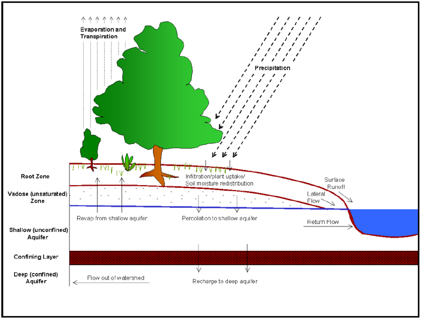
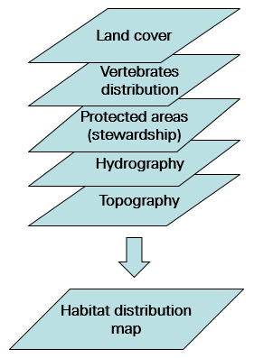
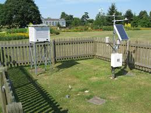

Identification of Suitable Wetlands for Bird Species
800 species are extinct every year due to human activities
(Costello, May, & Stork, 2013)
Study Area
Indiana State
The study area is located in Southwestern Indiana. It is integrated by Big Creek Watershed (BCW) (HUC: 0512011307), and two sub-watersheds within the western part of the Bayou Creek Watershed (BaCW) (HUC: 0514020206). Both watersheds in the study area encompass a total area of 784.6 km2.

Study Area
Big Creek Watershed
The studied area lies in three of Indiana’s counties: Posey, Vanderburgh, and Gibson. These counties account for 70.1%, 22.9%, and 7.0% of the study area, respectively.

Hydrological and Ecological Modelling
Big Creek Watershed was divided into 101 sub-basin for moedlling purpose
SWAT Model (Hydrological Model)
SWAT operates on a daily time step and is designed to predict the impact of land use and management on water, sediment, and agricultural chemical yields in ungauged watersheds.
GAP Model (Ecological Model)
The Gap Analysis Program (GAP) tool, initially proposed by Scott (Scott et al., 1993) in 1980, uses multiple spatial datasets to estimate biodiversity of multiple species and their spatial distribution. The GAP tool is today used by the US Geological Survey (USGS) to evaluate distribution of a range of plants and animals that are not necessarily endangered.
Weather stations employed for Hydrological Modelling
Evansville Regional Airport and Mount Vernon
Two weather stations were employed for climate dataset.
Stream station employed for Calibration
Big Creek USGS near to Wadesville
This station is located at latitude: 38°04'59.2" N, longitude: 87°46'10.7" W. This stream station is located almost in the middle of Big Creek route and encompass 269.95 Km2.
Discharge records for last months are shown below.

Potential Wetland Areas in Big Creek Watershed
Based on Babbar's methodology, potential-wetlands suitable for four focused bird-species were obtained.
American Redstart
The American redstart is a New World warbler. It is unrelated to the Old World redstarts.

American Woodcock
The American woodcock, sometimes colloquially referred to as the timberdoodle, is a small chunky shorebird species found primarily in the eastern half of North America.

Red-eyed Vireo
The red-eyed vireo is a small American songbird, 13–14 cm in length. It is somewhat warbler-like but not closely related to the New World warblers. Common across its vast range, this species is not considered threatened by the IUCN.

Wood Duck
The wood duck or Carolina duck is a species of perching duck found in North America. It is one of the most colorful North American waterfowl.